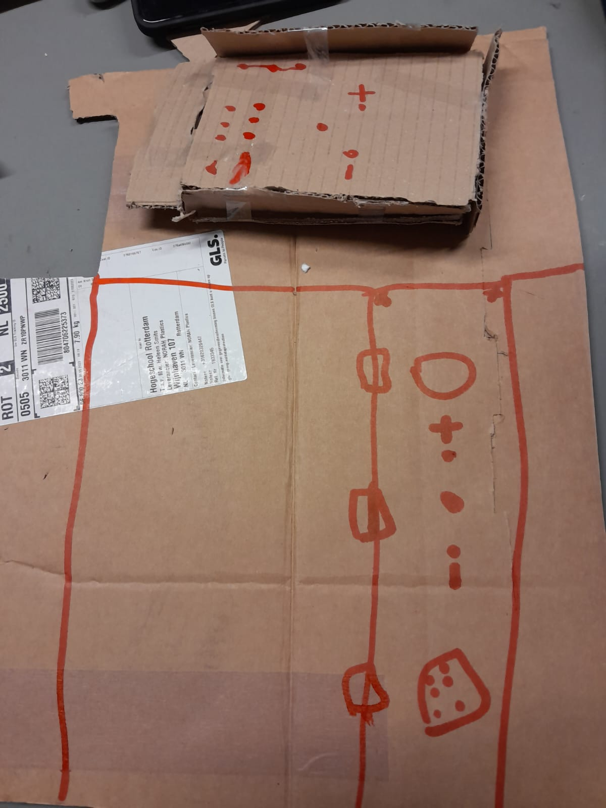
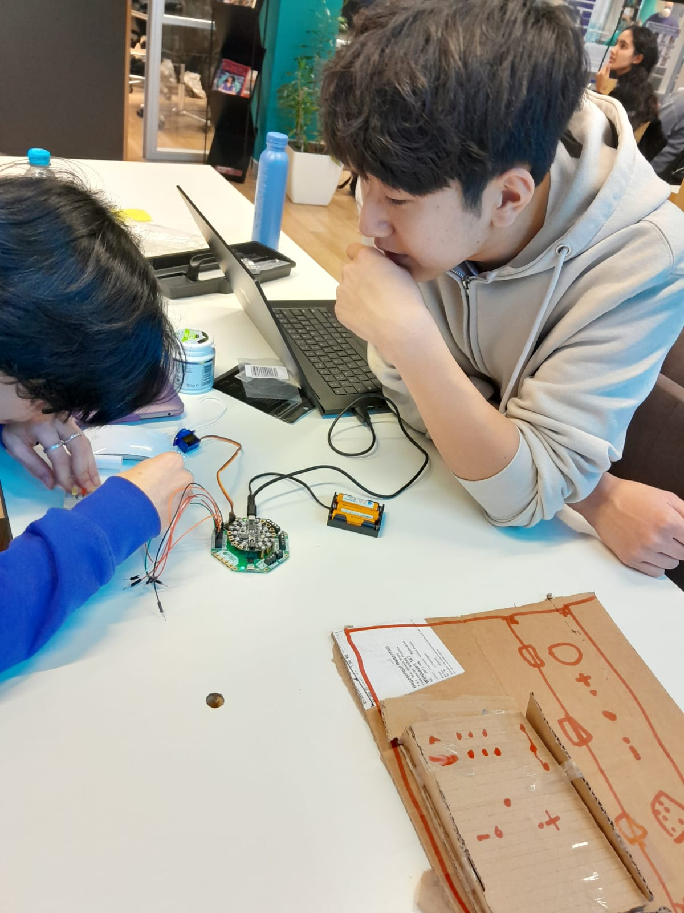

Ons Product
Je kent het probleem vast wel; je hebt een taak om te doen, of het nou opruimen, huiswerk of slapen is, maar je raakt maar steeds afgeleid door je telefoon! Dan na een paar uur scrollen door Tiktok neem je eindelijk pas de tijd, maar dan is het al te laat. Wij hebben de oplossing. Met dit revolutionaire concept kan je je telefoon voor een tijd naar jouw keuze opsluiten om te focussen op wat je te doen staat, en wanneer je klaar bent krijg je heb zo terug!
Van een simpel idee...
Hier onder is ons eerste getekende prototype te zien, die we hebben gemaakt met karton, plakband en stift. Het lijkt niet veel, maar prototypen als dit zijn integraal aan het design-proces. Dit prototype zorgde ervoor dat we een goed beeld hadden van het design dat we later zouden toepassen in schetsen, en later het eindproduct.
En nog simpelere prototypen...
na een al een paar dagen werk hadden we een werkend prototype en de precieze afmetingen van wat er gesneden moest worden in het materiaal dat wij hadden gekozen, hout. Een werkend eindproduct lag aan onze vingertoppen.
